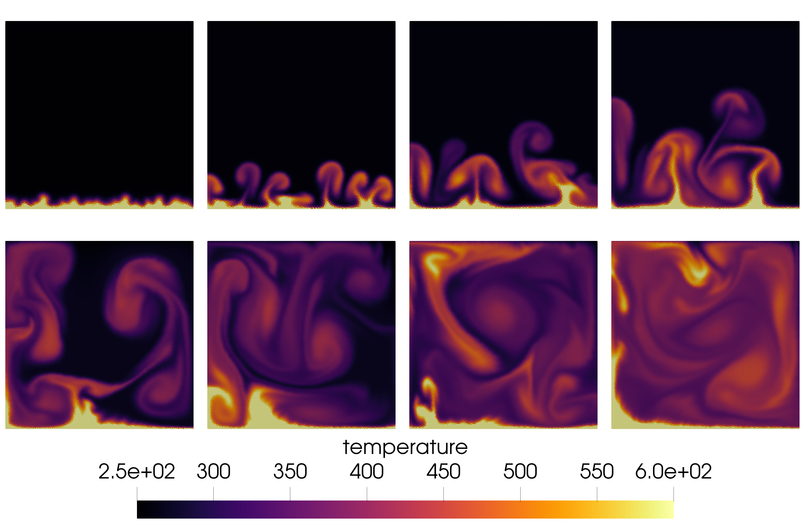

Example 7: Rayleigh-Bénard Instability
This test is similar to Rayleigh-Taylor but even more amazing. The top side of the domain is hot and the bottom is cold. The hot fluid expands and rises up, then cools again and sinks. The resulting dynamical pattern is called a convective cell. It is somehow related to atmosphere and weather. You can read more on wikipedia.
module heat
include("../src/LagrangianVoronoi.jl")
using .LagrangianVoronoi
const g = 9.8 #gravitation acceleration
const mu = 1e-4 #dynamic viscosity
const H = 0.1 #height
const W = 0.1
const gamma = 1.4 #adiabatic index
const rho0 = 10.0
const cV = 10.0 #sp. heat capacity
const R = (gamma - 1.0)*cV
const thermal_k = mu*cV*gamma/0.71 #thermal conductivity
const P0 = 1e4
const c0 = sqrt(gamma*P0/rho0)
const Tu = P0/(rho0*R) #temperature of upper boundary (cooler)
const Td = 1000.0 #30.0 #Tu*(1.0 + contrast) #temperature of lower boundary (heater)
const export_path = "results/heat"
const dr = H/100
const v_char = 2.0
const dt = 0.1*dr/v_char
const nframes = 400
const t_end = 1.0
function print_info()
thermal_D = thermal_k/(rho0*gamma*cV) #thermal diffusivity
thermal_a = 1.0/Tu
nu = mu/rho0
@show Pr = nu/thermal_D # Prandtl number
@show Ra = thermal_a*g*(Td-Tu)*(H^3)/(nu*thermal_D) # Rayleigh number
endDefine the initial state (exponential atmosphere) and the boundary condition for temperature.
function exp_atmo!(p::VoronoiPolygon)
p.T = Tu
p.P = P0*exp(-g*p.x[2]/(R*Tu))
p.e = cV*p.T
p.rho = p.P/(R*p.T)
p.mass = p.rho*area(p)
p.k = thermal_k
p.cV = cV
end
function T_bc(::RealVector, bdary::Int)::Float64
if (bdary == BDARY_DOWN)
return Td
elseif (bdary == BDARY_UP)
return Tu
end
return NaN # NaN indicates an adiabatic wall
endThe rest is fairly standard, except we also need to include Fourier diffusion in our time-marching scheme.
mutable struct Simulation <: SimulationWorkspace
grid::GridNS
solver::PressureSolver{PolygonNS}
E::Float64
S::Float64
E_kinetic::Float64
Simulation() = begin
xlims = (0.0, W)
ylims = (0.0, H)
domain = Rectangle(xlims = xlims, ylims = ylims)
grid = GridNS(domain, dr, xperiodic = true)
populate_lloyd!(grid, ic! = exp_atmo!)
return new(grid, PressureSolver(grid), 0.0, 0.0, 0.0)
end
end
function step!(sim::Simulation, t::Float64)
move!(sim.grid, dt)
gravity_step!(sim.grid, -g*VECY, dt)
ideal_eos!(sim.grid, gamma)
find_pressure!(sim.solver, dt)
pressure_step!(sim.grid, dt)
ideal_temperature!(sim.grid) # find the temperature according to ideal gas laws
fourier_step!(sim.grid, dt) # update the temperature by Fourier diffusion
heat_from_bdary!(sim.grid, dt, T_bc, gamma) # add heat flux from boundaries
find_D!(sim.grid)
viscous_step!(sim.grid, dt)
find_dv!(sim.grid, dt)
relaxation_step!(sim.grid, dt)
return
end
function postproc!(sim::Simulation, t::Float64)
sim.S = 0.0
sim.E = 0.0
sim.E_kinetic = 0.0
P0 = rho0*c0^2/gamma
for p in sim.grid.polygons
sim.S += p.mass*p.cV*(log(abs(p.P/P0)) - gamma*log(abs(p.rho/rho0)))
sim.E += p.mass*p.e
sim.E_kinetic += 0.5*p.mass*norm_squared(p.v)
end
percent = round(100*t/t_end, digits = 5)
println("t = $t ($(percent)%)")
@show sim.E
@show sim.S
@show sim.E_kinetic
println()
end
function main()
print_info()
sim = Simulation()
run!(sim, dt, t_end, step!; path = export_path,
vtp_vars = (:v, :P, :T, :rho),
postproc! = postproc!,
nframes = nframes
)
end
if abspath(PROGRAM_FILE) == @__FILE__
main()
end
endThis page was generated using Literate.jl.